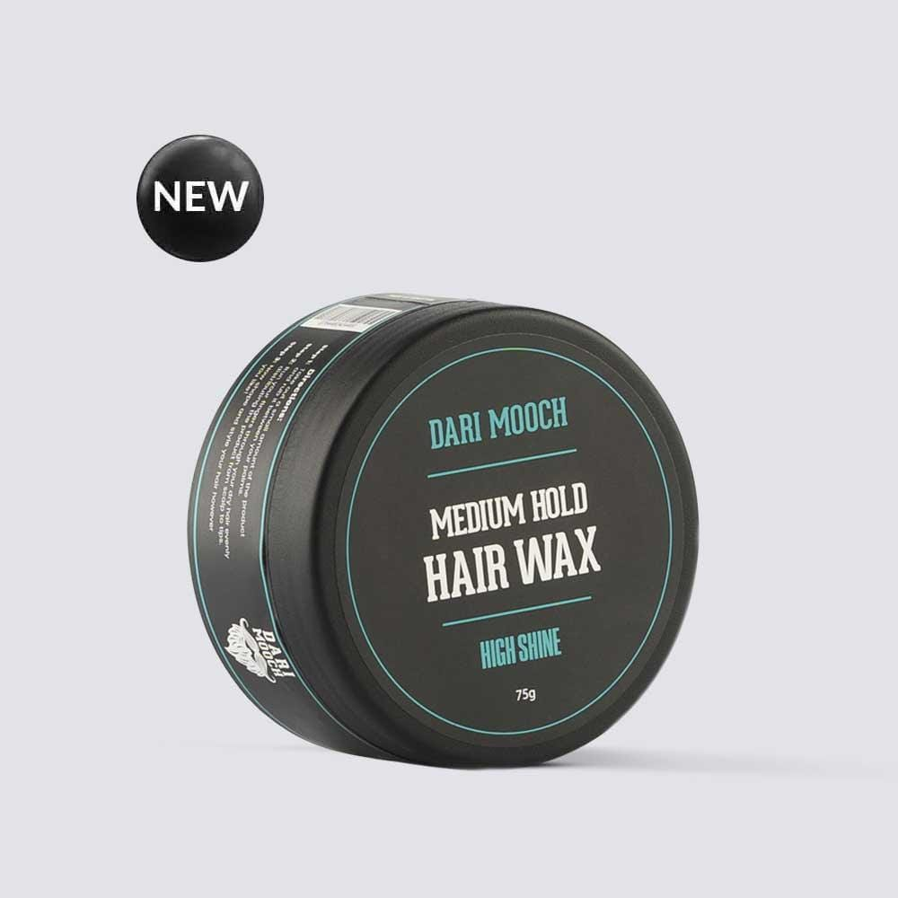
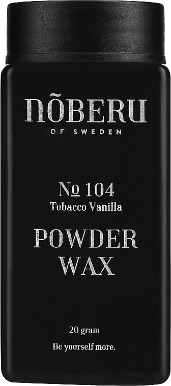
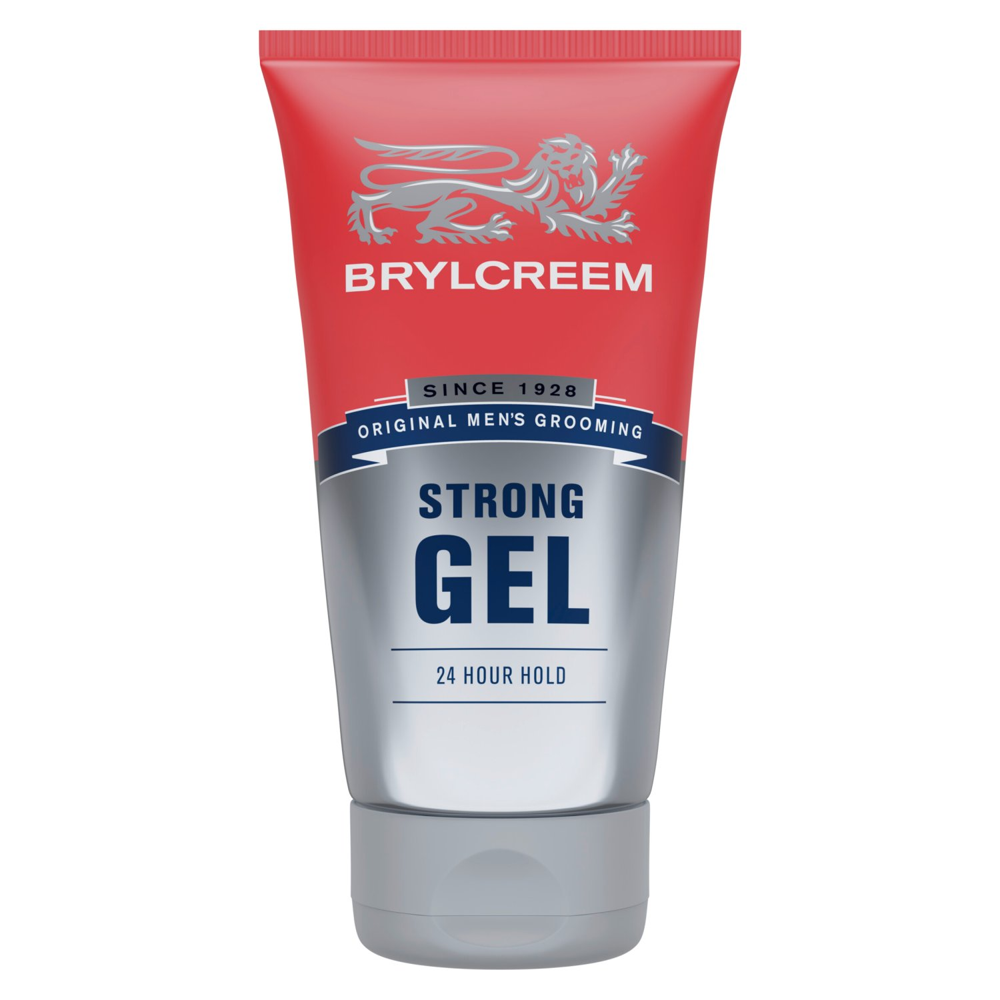

Hold: Low to medium holdShine: Medium to high shine
Hair wax is made from ingredients such as beeswax, carnauba wax, and lanolin.
Wax is designed to give you medium to high shine and a lighter hold than pomade. Technically you can use wax on any hairstyle, but it’s an ideal product for creating the messy, textured, bed-head looks that became popular around 2010.
Hold: very low hold
Shine: low shine
Few hairstyling products have garnered as much attention over the past year as sea salt spray—and for good reason.
The biggest style trend to emerge in 2020 is that everything is loose and flowing, and this has continued into 2021. Shirts have gotten bigger and boxier, denim has gone back to more relaxed cuts, and pleated trousers are no longer reserved for film noir and your Grandpa Joe.
The same applies to your hair—long, flowing, and natural looks are where it’s at.
Hold: medium to super high hold
Shine: medium to super high shine
You've likely used gel at some point in your life—especially if you grew up in the 80s and 90s when hard, spiky hair was king and hoards of frosted-tip adolescent boys roamed your local shopping mall on Friday nights.
Unfortunately, hair gel is still trying to recover from its crunchy, cringy past when most hair gels were made with alcohol. Those hair gels strip needed moisture from the hair and scalp and leave hair dry, brittle, and harder than a football helmet.